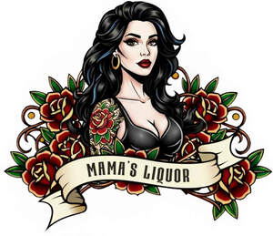

Trade Mark Journal No.2026/006 6 February 2026
UK00004327228 20 January 2026 (6,21,30,31,32,33,35,43)

- Class 6
- Cans of metal for alcoholic beverages; Beverage cans of metal; Metal beverage cans.
- Class 21
- Drinking bottles.
- Class 30
- Chocolate with alcohol; Sorbet infused with alcohol; Candies (Non-medicated -) with alcohol; Sweets (Non-medicated -) being alcohol based; Ice cream infused with alcohol; Drinking chocolate; Truffles (rum -) [confectionery]; Liqueur chocolates.
- Class 31
- Malt for distilling.
- Class 32
- Low alcohol beer; Alcohol free beverages; Alcohol free wine; Alcohol free cider; Alcohol free aperitifs; Non-alcoholic malt drinks; Non-alcoholic malt beverages; Non-alcoholic malt free beverages [other than for medical use]; Non-alcoholic beer flavored beverages; Non-alcoholic beer; Non-alcoholic wine; Alcohol-free beers; Non-alcoholic beverages; Non-alcoholic drinks; Beverages (Non-alcoholic -); Non-alcoholic fruit vinegar beverages; Sarsaparilla [non-alcoholic beverage]; Kvass [non-alcoholic beverages]; Carbonated non-alcoholic drinks; Non-alcoholic carbonated beverages; Malt syrup for beverages; Root beers, non-alcoholic beverages; Non-alcoholic fruit drinks; Fruit beverages (non-alcoholic); Cordials (non-alcoholic beverages); Non-alcoholic honey-based beverages; Honey-based beverages (Non-alcoholic -); Non-alcoholic beverages flavored with coffee; Non-alcoholic soda beverages flavoured with tea; Distilled drinking water; Non-alcoholic beverages flavoured with coffee; Non-alcoholic grape juice beverages; Kvass [non-alcoholic beverage]; Non-alcoholic beverages with tea flavor; Carbohydrate drinks; Non-alcoholic dried fruit beverages; Non-alcoholic flavored carbonated beverages; Energy drinks containing caffeine; Beer-based beverages; Non-alcoholic beverages flavored with tea; Fruit-flavored beverages; Coconut water as a beverage; Coconut water as beverage; Fruit-based beverages; Non-alcoholic beverages flavoured with tea; Vegetable juices [beverage]; Isotonic beverages; Fruit-flavoured beverages; Smoothies [non-alcoholic fruit beverages]; Sherbet beverages; Coconut-based beverages; Fruit juice beverages (Non-alcoholic -); Non-alcoholic fruit juice beverages; Fruit beverages; Syrups for beverages; Whey beverages; Beverages (Whey -); Tomato juice [beverage]; Isotonic non-alcoholic drinks; Squashes [non-alcoholic beverages]; Non-alcoholic syrups for making beverages; Syrups for making non-alcoholic beverages; Iced fruit beverages; Protein-enriched sports beverages; Non-alcoholic bitters; Coffee-flavored ale; Non-alcoholic fruit cocktails; Orgeat; Non-alcoholic beer-based cocktails; Cider, non-alcoholic; Flavored beer; Pineapple juice beverages; Cocktails, non-alcoholic; Non-alcoholic cocktails; Ginger beer; Smoked plum juice beverages; Coffee-flavored beer; Non-alcoholic sparkling fruit juice drinks; Fruit flavored drinks; Coconut juice; Cordials [non-alcoholic]; Non-alcoholic cordials; Malt beer; Ginger juice beverages; Ginger ale; Cola drinks; Beer-based cocktails; Fruit flavoured drinks; Flavored beers; Non-alcoholic fruit punch; Non-alcoholic cocktail mixes; Non-alcoholic cocktail bases; Non-alcoholic cinnamon punch with dried persimmon (sujeonggwa); Beer; Barley wine [Beer]; Barley wine [beer].
- Class 33
- Rice alcohol; Alcohol (Rice -); Rum [alcoholic beverage]; Aperitifs with a distilled alcoholic liquor base; Pre-mixed alcoholic beverages; Sugarcane-based alcoholic beverages; Alcoholic energy drinks; Alcoholic beverages, except beer; Alcoholic beverages (except beer); Beverages (Alcoholic -), except beer; Low alcoholic drinks; Pre-mixed alcoholic beverages, other than beer-based; Grain-based distilled alcoholic beverages; Alcoholic cocktails; Alcoholic beverages of fruit; Alcoholic fruit beverages; Cordials [alcoholic beverages]; Alcoholic carbonated beverages, except beer; Alcoholic wines; Alcoholic fruit cocktail drinks; Baijiu [Chinese distilled alcoholic beverage]; Alcoholic beverages except beers; Alcoholic beverages (except beers); Alcoholic beverages [except beers]; Alcoholic cocktails containing milk; Alcoholic seltzers; Alcoholic coffee-based beverage; Fruit (Alcoholic beverages containing -); Alcoholic beverages containing fruit; Alcoholic cordials; Nira [sugarcane-based alcoholic beverage]; Alcoholic bitters; Flavored brewed alcoholic malt beverages, except beers; Alcoholic tea-based beverage; Flavoured brewed alcoholic malt beverages, except beers; Ginseng liquor; Alcoholic aperitifs; Alcoholic punches; Alcoholic essences; Alcoholic cocktail mixes; Prepared alcoholic cocktails; Alcoholic aperitif bitters; Preparations for making alcoholic beverages; Alcoholic preparations for making beverages; Distilled beverages; Beverages (Distilled -); Alcoholic extracts; Wine-based beverages; Rum-based beverages; Spirits [beverages]; Wine coolers [drinks]; Rum; Rum punch; Sugar cane juice rum; Rum infused with vitamins; Whiskey [whisky]; Brandy; Whiskey; Whisky; Anisette [liqueur]; Malt whisky; Gin; Vodka; Flavored tonic liquors; Aguardiente [sugarcane spirits]; Cherry brandy; Anise [liqueur]; Cachaca; Blackcurrant liqueur; Blended whisky; Arrack; Tonic liquor flavored with japanese plum extracts (umeshu); Cream liqueurs; Peppermint liqueurs; Tonic liquor flavored with pine needle extracts (matsuba-zake); Liqueurs; Schnapps; Coffee-based liqueurs; Arak [arrack]; Arrack [arak]; Cooking brandy; Anisette; Wine-based drinks; Digestifs [liqueurs and spirits]; Japanese liquor flavored with pine needle extracts; Wine punch; Vermouth; Canadian whisky; Sangria; Aquavit; Red ginseng liquor; Japanese white liquor (shochu); Japanese white liquor [shochu]; Hulless barley liquor; Chinese brewed liquor (laojiou); Extracts of spiritous liquors; Tonic liquor containing herb extracts (homeishu); Chinese mixed liquor (wujiapie-jiou); Beverages containing wine [spritzers]; Chinese white liquor (baiganr); Chinese white liquor [baiganr]; Japanese sweet rice-based mixed liquor (shiro-zake); Japanese sweet rice-based mixed liquor [shiro-zake]; Japanese liquor containing herb extracts; Tonic liquor containing mamushi-snake extracts (mamushi-zake).
- Class 35
- Retail services in relation to alcoholic beverages (except beer); Wholesale services in relation to alcoholic beverages (except beer); Retail services relating to alcoholic beverages.
- Class 43
- Serving of alcoholic beverages; Drink dispensing machines (rental of).
Richard Haywood
Alarna Haywood